Матеріали Дентсплай Сірона · журнал «ДентАрт» 2023 №2
Біоінертні пломбувальні матеріали для лікування верхньощелепних синуситів ендодонтичного походження
Bioinert filling materials for the treatment of maxillary sinusitis of endodontic origin
Лікування кореневих каналів — складний процес, в якому важко проконтролювати всі етапи. Кожний етап важливий і має свій вплив на прогноз лікування тієї чи іншої патології, та, на жаль, якість виконання кожного етапу лікування чи маніпуляції проконтролювати неможливо.
Це стосується як інструментальної обробки (за даними літератури, жодна із систем ендодонтичних інструментів не дає стовідсоткової інструментальної обробки кореневого каналу), медикаментозної обробки (у процесі клінічної роботи лікар не може знати кількісного та якісного складу бактеріальної мікрофлори і того, як на неї повпливали розчини, якими проводиться іригація кореневих каналів), так і обтурації — проконтролювати кількість пломбувального матеріалу в апікальній частині кореневої системи, щільність обтурації і те, чи не вийде при цьому пломбувальний матеріал за межі кореневої системи, неможливо.
Складність також полягає у тому, що анатомічно корені зубів можуть бути розташовані не тільки в альвеолярній лунці, але й поблизу інших важливих анатомічних утворень або безпосередньо в них, зокрема у гайморових пазухах. Розташування коренів молярів і премолярів верхньої щелепи відносно верхньощелепної пазухи може бути різним. Це залежить від типу будови верхньощелепних пазух:
- пневматичний тип — свідчить про надмірний розвиток верхньощелепної пазухи. Її межі можуть поширюватися на альвеолярний, піднебінний і навіть виличний відростки. У таких випадках відстань між верхівками зубів верхньої щелепи і дном верхньощелепної пазухи значно зменшується. У деяких випадках кісткової стінки в зоні дна верхньощелепної пазухи взагалі немає, і верхівки зубів вкриті лише слизовою оболонкою. Отже, чим більше пневматизована верхньощелепна пазуха, тим нижче й тонше її дно і вища вірогідність її інфікування з одонтогенних вогнищ;
- склеротичний тип — характерний для малих розмірів верхньощелепної пазухи. При цьому кісткова перегородка між слизовою оболонкою пазухи і верхівками зубів може досягати кількох міліметрів;
- змішаний тип — у деяких випадках можлива асиметрія типів верхньощелепних пазух (з одного боку — пневматичний тип: тонкі стінки та великий об'єм, з другого — склеротичний тип: товсті стінки та малий об'єм). І якісно оцінити це можна тільки методом комп'ютерної томографії.
Якщо коренева система розташована поблизу дна гайморової пазухи, то розвиток періапікальних змін відносно гайморової пазухи може йти двома шляхами:
Періапікальний остеопороз (ПAO) — періапікальні зміни, що контактують з кортикальною пластинкою дна верхньощелепної пазухи, зміщують її вгору, і в міру розвитку процесу запускається періостальна реакція, яка продовжує відкладати тонкий шар кістки на внутрішній поверхні окістя. Унаслідок цього утворюється тонкий купол з кісткової тканини на дні верхньощелепної пазухи, який чітко видно на КПКТ. Залежно від розмірів ця патологія може розвиватися з різним ступенем набряку слизової оболонки дна гайморової пазухи.
Періапікальний мукозит (ПАМ) — періапікальні зміни, що контактують зі слизовою оболонкою верхньощелепної пазухи, як правило, спричиняють локалізований набряк слизової оболонки, який на КПКТ має вигляд потовщення слизової оболонки, або куполоподібне розширення м'яких тканин на дні пазухи.
Важливо правильно провести диференційну діагностику патологічних змін слизової оболонки верхньощелепної пазухи ендодонтичного походження від істинних патологічних утворень гайморових пазух, таких як ретенційні кісти слизової оболонки гайморової пазухи, поліпи, потовщення слизової оболонки, викликані алергічними реакціями, тощо — оскільки рентгенологічно вони досить схожі. При ендодонтичній етіології зміни в гайморовій пазусі будуть односторонніми.
Важливим є визначення ендодонтичного статусу зубів, що межують з патологічними змінами у верхньощелепній пазусі. Причинні зуби не реагують на холодові подразники, що є основною ознакою невітальних зубів, та перкусію, оскільки в апікальній частині не створюється тиск на періодонт при збільшенні періапікальних змін чи їх загостренні. Можливі виділення гнійного вмісту з відповідної половини носа. Пацієнт відчуває постійний гнилісний запах, можливі головні болі.
При лікуванні верхньощелепних синуситів ендодонтичного походження важливе використання біоінертних пломбувальних матеріалів, що не подразнюють періапікальні тканини, не розсмоктуються, не сприяють росту бактеріальної чи грибкової мікрофлори. На сьогодні такими матеріалами в ендодонтичній практиці є гутаперча та силери на основі епоксидних смол, зокрема AH Plus/AH Plus Jet (Dentsply Sirona). Проаналізуємо на прикладі клінічних випадків, як впливає пломбувальний матеріал, виведений за межі кореневої системи і в просвіт верхньощелепної пазухи, на процес загоювання та прогноз лікування.
Клінічний випадок 1
17-річний пацієнт звернувся в клініку з метою санації ротової порожнини. У зубі 16 був діагностований вторинний карієс, скарги відсутні, зуб не реагував на холодові подразники, перкусія негативна. На КПКТ були виявлені періапікальні зміни в зоні коренів зуба 16, кортикальна пластинка дна правої верхньощелепної пазухи над періапікальними змінами не чітко прослідковується і куполоподібно входить у просвіт гайморової пазухи. Наявне одностороннє розростання слизової оболонки дна та передньої стінки правої верхньощелепної пазухи.
Ендодонтичне лікування проведене в 2 етапи. На першому етапі була зроблена інструментальна обробка 4-х кореневих каналів ProTaper Universal (Dentsply Sirona), медіальна коренева система зійшлася в апікальній третині. Іригація проводилася 17 % розчином EDTA та 5,25 % розчином гіпохлориту натрію. Кореневі канали були заповнені кальцій гідроксидом.
Під час наступного візиту через 2 тижні у пацієнта скарги відсутні. Було зроблено повторну інструментальну і медикаментозну обробку кореневих каналів та обтурацію системою Thermafil (Dentsply Sirona) із силером AH Plus (Dentsply Sirona). На контрольній рентгенограмі помітний незначний вихід пломбувального матеріалу за межі кореневої системи.
Через 7 місяців на повторній КПКТ бачимо повне загоєння періапікальних змін, кісткова тканина чітко прослідковується в апікальній проєкції вестибулярних коренів та слабко прослідковується в проєкції піднебінного кореня. Слизова оболонка гайморової пазухи повністю відновлена.
Клінічний випадок 2
Пацієнт, 20 років, був направлений у стоматологічну клініку ЛОР-відділенням для виключення одонтогенної етіології частих гайморитів у пацієнта. Після КПКТ було виявлено, що корені зуба 16 своєю апікальною частиною розташовані безпосередньо в гайморовій пазусі, при цьому в правій верхньощелепній пазусі наявні односторонні зміни. Зуб 16 при цьому абсолютно безсимптомний.
Після ревізії та розпломбування кореневої системи зуба 16 було знайдено пропущений МВ2 та виявлено пряме сполучення піднебінного кореня з правою верхньощелепною пазухою. Коли пацієнт намагався подути в закритий ніс, з піднебінного кореневого каналу було отримано серозні виділення з незначним виходом повітря.
Ендодонтичне лікування проведене в 2 етапи. На першому етапі було зроблено дезобтурацію кореневої системи, інструментальна обробка провадилася системою ротаційних інструментів ProTaper Gold (Dentsply Sirona). Геометрія цих інструментів ідентична з ProTaper Universal (Dentsply Sirona), але за рахунок нового нікель-титанового сплаву в інструментів покращилися показники гнучкості і витривалості.
Іригація робилася 17 % розчином EDTA і 5,25 % розчином гіпохлориту натрію. Кореневі канали були заповнені гідроксидом кальцію Calasept (Nordiska Dental). Під час наступного візиту через 2 тижні у пацієнта скарги як з боку ЛОР-патології, так і з боку причинного зуба відсутні. Була зроблено повторну інструментальну і медикаментозну обробку кореневих каналів, вдалося досягнути сухості в кореневих каналах, і була проведена обтурація системою Thermafil (Dentsply Sirona) із силером AH Plus (Dentsply Sirona). На контрольній рентгенограмі бачимо обтурацію латерального канальця в піднебінному корені та незначний вихід пломбувального матеріалу за межі кореневої системи.
Через 6 місяців на повторній КПКТ видно відсутність періапікальних змін у зубі 16, кісткова тканина в апікальній частині коренів цього зуба не прослідковується. Слизова оболонка гайморової пазухи повністю відновлена. Пломбувальний матеріал, який вийшов за межі кореневої системи, розташований у просвіті гайморової пазухи і не покритий слизовою оболонкою дна верхньощелепної пазухи. Протягом останніх 6 місяців у пацієнта рецидивів гаймориту не було.
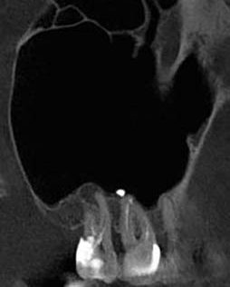
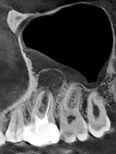
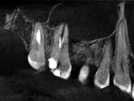
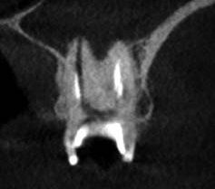
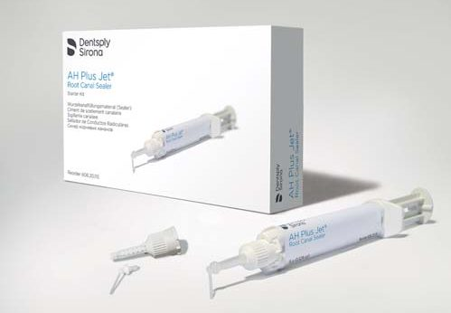
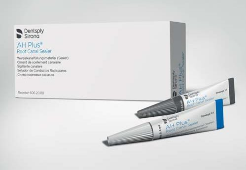
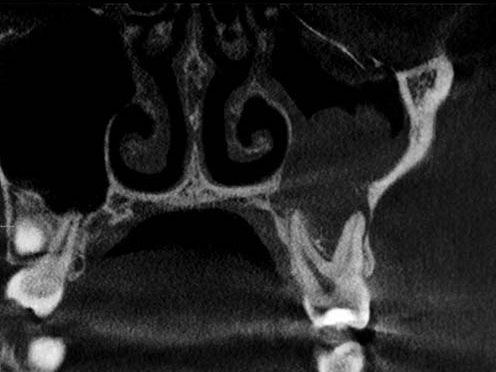
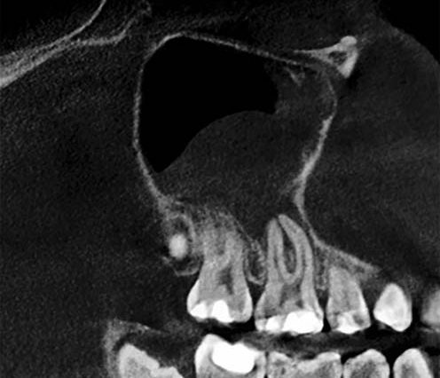
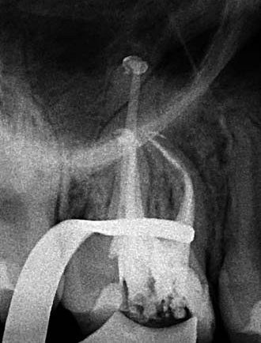
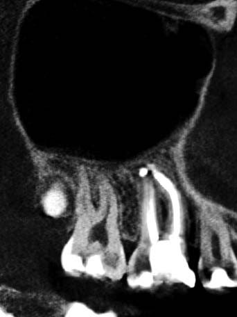
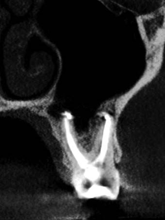
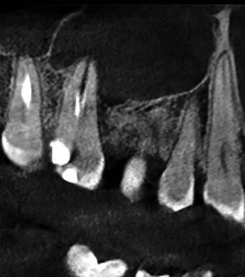
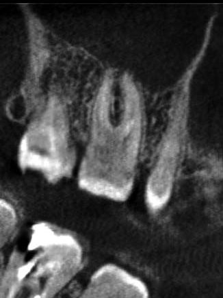
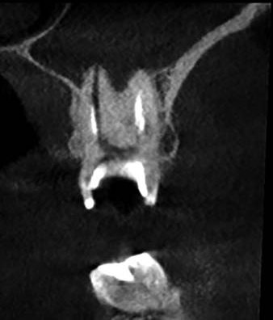
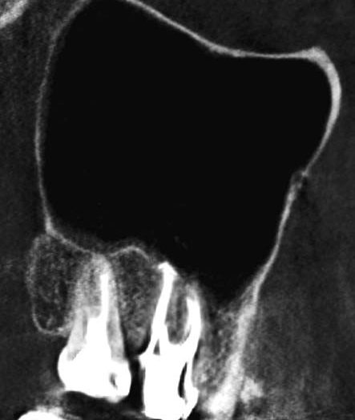
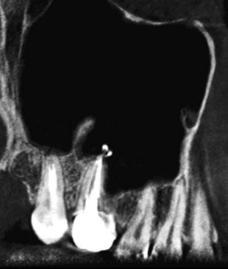
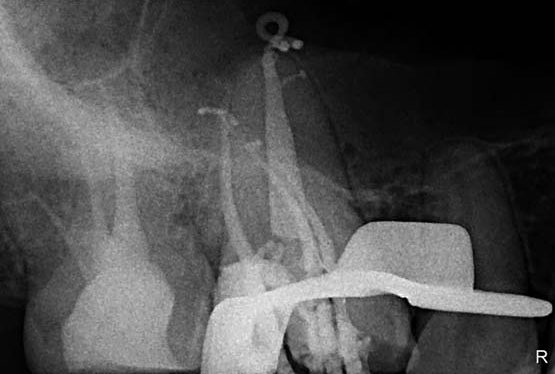
Періапікальний остеопороз без реакції слизової оболонки дна гайморової пазухи (А) та більш виражений процес з реакцією слизової оболонки (Б); періапікальний мукозит; КПКТ і рентгенограми клінічних випадків 1 і 2 — до лікування, контроль обтурації та повторна КПКТ через 7 і 6 місяців.
Висновки
Біоінертність пломбувального матеріалу є вкрай важливим фактором, який впливає на прогноз лікування синуситів ендодонтичного походження, оскільки ці матеріали не спричиняють подразнення тканин пародонта та слизової оболонки верхньощелепної пазухи, не перешкоджають процесам відновлення періапікальних тканин і слизової оболонки гайморової пазухи, а також не спричиняють росту бактеріальної чи грибкової мікрофлори навколо. За даними досліджень, силер AH Plus (Dentsply Sirona) має найнижчу цитотоксичність серед силерів на основі епоксидних смол. При цьому методика гарячої обтурації за допомогою обтураторів у поєднанні із силером AH Plus (Dentsply Sirona) дозволяє досягнути досить щільної 3D обтурації кореневої системи.
Література
- ENDODONTICS: Colleagues for Excellence, Fall 2018.
- Journal of Oral Biology and Craniofacial Research, September–October 2022, P. 645-650.
- Тимофеев А. А. Руководство по челюстно-лицевой хирургии и хирургической стоматологии. — К.: Червона-Рута-Турс, 2002. — 1024 с.
- Хірургічна стоматологія та щелепно-лицева хірургія: підручник; у 2 т. — Т. 1 / В. О. Маланчук, О. С. Воловар, І. Ю. Гарляускайте та ін. — К.: ЛОГОС, 2011. — 672 с.
- Comparative Evaluation Of The Apical Sealing Ability Of BioRoot And AH Plus Sealers: An In Vitro Study. Ammar Eid, Davide Mancino, Fadi Joudi, Mohammad Salem Rekab, Kinda Layous, Omar Hamadan, Youssef Haikel, Naji Kharouf. International Journal of Dentistry and Oral Science (IJDOS) 2021.08(04).
- In Vitro Analysis of AH Plus and MM-Seal by ESR and Thermoanalytical Methods. Y. Ceylana, A. Ustab, K. Ustab, F. KontCobankarac, C. Yildirimdand, M. Birey. Special issue of the International Conference on Computational and Experimental Science and Engineering (2014).
Література
- Endodontics: Colleagues for Excellence. Fall 2018.
- Journal of Oral Biology and Craniofacial Research. 2022 Sep–Oct: 645–650.
- Тимофеев А. А. Руководство по челюстно-лицевой хирургии и хирургической стоматологии. — К.: Червона Рута-Турс, 2002. — 1024 с.
- Маланчук В. О., Воловар О. С., Гарляускайте І. Ю. та ін. Хірургічна стоматологія та щелепно-лицева хірургія: підручник у 2 т. Т. 1. — К.: Логос, 2011. — 672 с.
- Eid A., Mancino D., Joudi F., et al. Comparative evaluation of the apical sealing ability of BioRoot and AH Plus sealers: an in vitro study. Int J Dent Oral Sci. 2021; 8(4).
- Ceylan Y., Usta A., Usta K., et al. In vitro analysis of AH Plus and MM-Seal by ESR and thermoanalytical methods. Special issue of the ICCESEN. 2014.